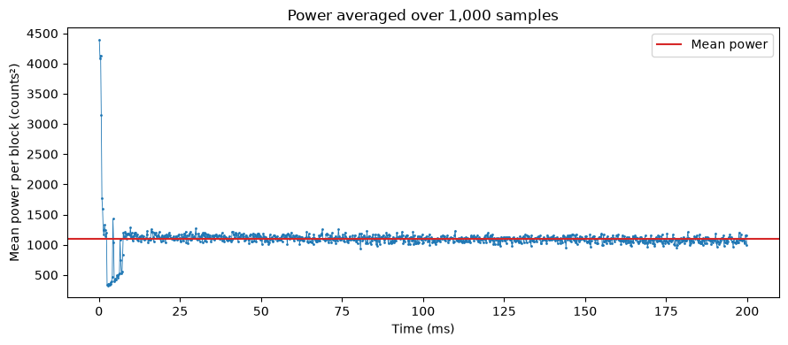

Finding a startup transient
Collected experimental data and analyzed a one-million-sample instrument recording. Block-power visualization revealed a short startup transient that distorted the overall scatter.
Read the analysis
Question. Does the measured noise agree with the expected statistical behavior?
Method. Checked sample counts, ADC range and clipping; calculated power in blocks of 1,000 samples; compared the stable portion with the ideal radiometer prediction.
Result. After excluding the initial 10 ms, relative scatter was 4.71%, compared with an ideal prediction of 4.47%. A longer recording was split into 9,951 segments for averaged FFT power-spectrum analysis.
Takeaway. Check data quality and transient behavior before interpreting an aggregate statistic. These are results from an academic laboratory setup.